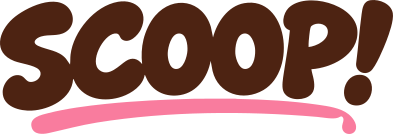

Fruchtig. Frech. Unwiderstehlich.
Strawlarry
Sommer im Becher. Ich bring die Erdbeeren, du den Löffel. Deal?
500 ml · Erdbeere6,90 €

Kleine Pause. Großes Grinsen.
Drei Sorten. Dein Mix.
Jede Menge gute Laune.
Die kleinen Glücklichmacher
Einzeln schon gut. Zusammen ziemlich unschlagbar.
Fruchtig. Frech. Unwiderstehlich.
Sommer im Becher. Ich bring die Erdbeeren, du den Löffel. Deal?
Nussig. Lässig. Dein neuer Bro.
Pistazie, Bro! Schön cremig, leicht nussig und immer für noch einen Löffel zu haben.
Vanille. Völlig ohne Drama.
Moin, Jochen hier. Vanille ist mein Ding. Langweilig? Probier mich erst mal.
Psst: Das hier ist ein fiktiver Demo-Shop. Es wird nichts verkauft oder versendet.
Drei Plätze. Alles ist erlaubt.
Stell dir deine persönliche 3er-Box zusammen.
Dreimal dein Liebling? Wir urteilen nicht.
Jede Kombination kostet gleich viel.
Du hast das letzte Löffelwort.
Eine kleine Portion Optimismus
Wir sind Nadin und Ben. Unsere Idee ist ziemlich einfach: Eis, das nach guten Zutaten schmeckt und den Alltag ein bisschen heller macht. Dafür stehen wir selbst am Eistopf – mit Neugier, Handarbeit und jeder Menge Lust auf den nächsten Scoop.
Handmade in Mönchengladbach. Wir produzieren lokal, in kleinen Portionen und mit Bio-Zutaten. Ohne Zusatzstoffe und ohne Geschmacksverstärker. Was du schmeckst? Erdbeere, Pistazie oder Vanille. So, wie es sein soll.
Ob eine Kugel für deine kleine Pause oder eine Mix-Box zum Teilen: Wir möchten Menschen zusammenbringen und aus „nur kurz ein Eis“ einen richtig guten Moment machen.
Zwei Menschen. Ein ziemlich cremiger Plan.
Portraits: KI-Platzhalter für diese fiktive Design Study.
Dein Geschmack zählt
Drei Kandidaten. Ein Platz in der Kühltruhe. Wen würdest du als Nächstes scoop’en?